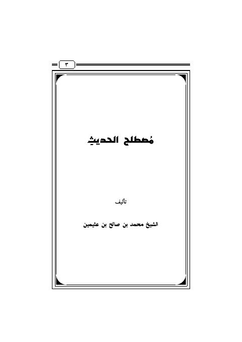

Downloads need an internet connection.
مصطلح الحديث- العثيمين
Authors: محمد بن صالح العثيمين
Publishers: مقرر السنة الثانية الثانوية في المعاهد العلمية
**▫️ العنوان: مصطلح الحديث- العثيمين** ▪️ المؤلف: #محمد_بن_صالح_العثيمين ▫️ الناشر: #مقرر_السنة_الثانية_الثانوية_في_المعاهد_العلمية ▪️ تاريخ النشر: 1427هـ 2006م ▫️ بلد النشر: #السعودية ▪️ الطبعة: 1 ▫️ عدد الأجزاء: 1 ▪️ الصفحات: 94 ▫️ نوع الوعاء: #كتاب ▪️ التصنيف الرئيسي: #الحديث_وعلومه ▫️ التصنيف الفرعي: #مصطلح_الحديث ۪